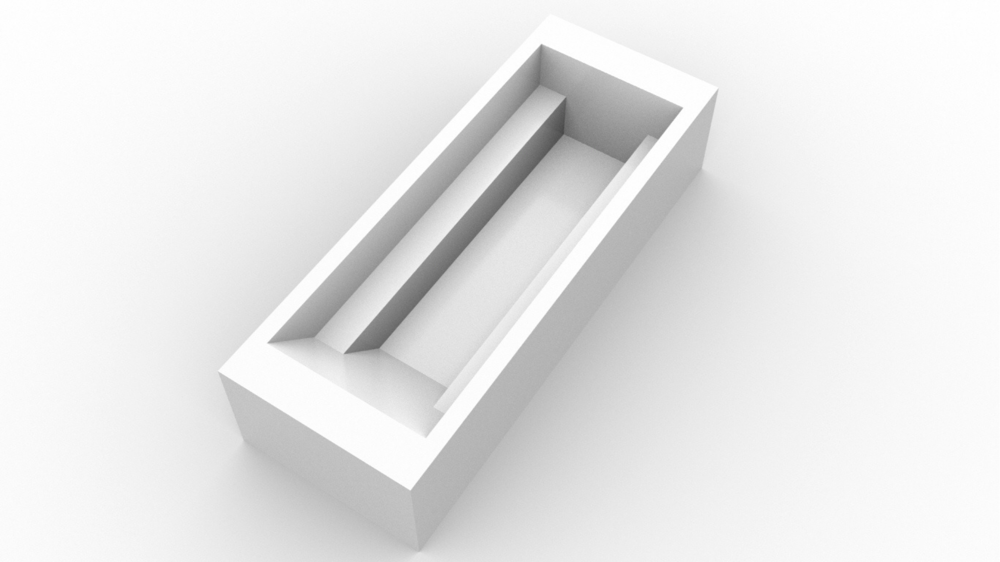
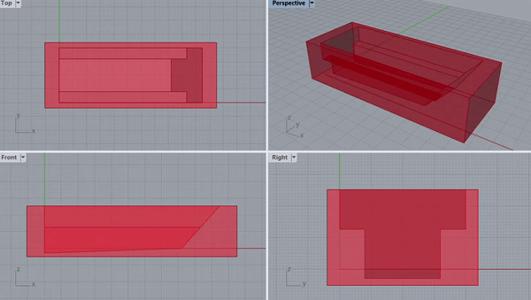
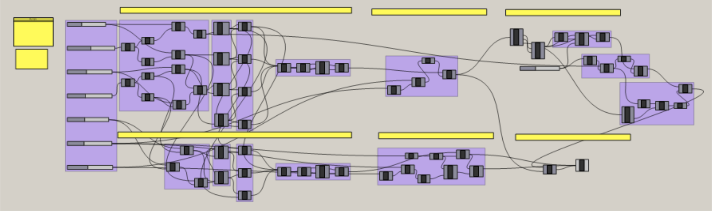

Standard bathtubs are typically designed around fixed dimensions that do not account for variation in human size. This results in discomfort, especially for taller and larger individuals, who often cannot fully extend their legs or sit comfortably when using hotel, Airbnb, or residential tubs.
This project applies Design for Human Variability principles to create a universal bathtub that accommodates a broad range of body sizes while also reducing water usage through a more compact, ergonomic form.
Most tubs assume an “average user,” which does not reflect real-world anthropometric
diversity.
Key challenges included:
- Allowing comfortable leg extension for larger users.
- Ensuring ergonomic body support for smaller users.
- Avoiding unnecessary internal volume to minimize water consumption.
- Designing a form suitable for mass production and installation.
The objective was to create a single bathtub geometry that provides comfort for as much of the population as possible.
The design process began with quantitative analysis of human body size data from NHANES 2013–2016, representing a diverse U.S. population.
This data was used to:
- Determine critical length and width requirements.
- Establish body support angles and recline geometry.
- Identify dimensional ranges accommodating the 5th to 95th percentile of users.
Insights were supported by benchmarking three major commercial bathtub manufacturers, helping identify gaps in existing market solutions.
Software: Rhino + Grasshopper
Once target dimensions were defined, the bathtub was modeled as a parametric system. A
Grasshopper script controlled:
- Tub length
- Interior depth and recline angle
- Wall curvature and seat contours
Using number sliders, these variables could be adjusted dynamically, enabling fast iteration and visual validation.
This approach ensured:
- Future adaptability (easy to update specifications).
- Ability to test comfort for different user percentiles.
- Efficient comparison of form vs. water volume impact.
Design for Human Variability means the product evolves with new data, not just with designer intuition.


The finalized bathtub geometry:
- Allows leg extension for tall users.
- Cradles smaller users with supportive interior curves.
- Reduces unnecessary water volume compared to standard tubs.
- Maintains manufacturability for residential and commercial deployment.
Problem: Standard tubs do not accommodate differences in body size, leading to discomfort and
waste.
Method: Applied anthropometric data, statistical modeling, and parametric design tools to
develop an adaptive bathtub form.
Result: A universal bathtub geometry that improves comfort while reducing water consumption,
with a parametric system that allows easy iteration and future refinement.